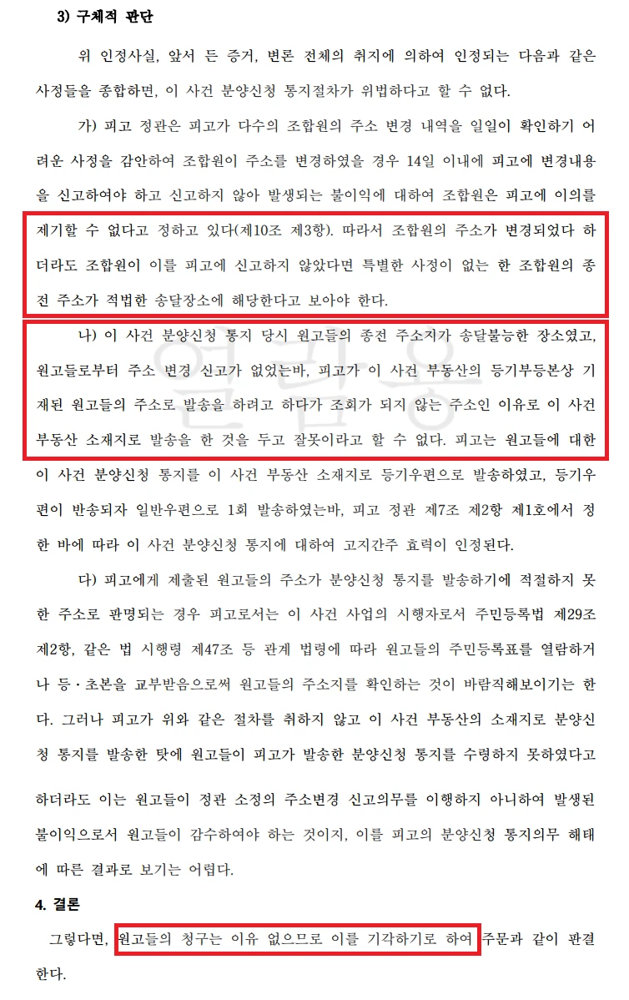

사건 개요
분양신청 통지 하자 주장 방어, 관리처분계획 무효확인 소송 전부 승소
1. 사건 개요
- 의뢰인: 주택재개발정비사업조합 (피고)
- 상대방: 재개발구역 내 부동산을 공유하고 있는 조합원 부부 (원고)
- 사건 배경: 의뢰인(조합)이 정한 분양신청기간 내에 상대방이 분양신청을 하지 않았습니다. 이에 의뢰인은 상대방을 현금청산대상자로 정하는 내용의 관리처분계획을 수립하여 인가를 받았습니다. 그러자 상대방은 의뢰인이 적법한 분양신청 통지절차를 거치지 않았으므로 자신들을 현금청산대상자로 정한 관리처분계획은 무효라고 주장하며 행정소송을 제기했습니다.
2. 핵심 쟁점 및 법률사무소 준일의 조력 이 사건의 핵심은 조합이 조합원에게 분양신청 통지 의무를 적법하게 다하였는지 여부였습니다. 상대방은 조합이 주의의무를 다하지 않았다고 주장했으나, 우리는 다음과 같은 객관적 사실과 조합 정관의 법리를 바탕으로 이를 완벽히 반박했습니다.
- 조합원의 주소 변경 신고 의무 위반 입증:조합 정관에 따르면 조합원이 주소를 변경한 경우 14일 이내에 조합에 신고해야 하며, 미신고로 인한 불이익에 대해 이의를 제기할 수 없습니다.우리는 상대방이 거주지를 이전하고도 조합에 주소 변경 신고를 한 적이 없다는 사실을 명확히 입증했습니다.
- 조합 정관에 따르면 조합원이 주소를 변경한 경우 14일 이내에 조합에 신고해야 하며, 미신고로 인한 불이익에 대해 이의를 제기할 수 없습니다.
- 우리는 상대방이 거주지를 이전하고도 조합에 주소 변경 신고를 한 적이 없다는 사실을 명확히 입증했습니다.
- 조합의 성실한 통지 노력 및 절차적 적법성 소명:상대방의 종전 주소지들이 송달불능 상태인 것을 확인한 의뢰인이 사건 부동산 소재지로 등기우편을 발송했고, 반송되자 정관에 따라 일반우편으로 추가 발송하는 등 적법한 고지 절차(고지간주 효력)를 거쳤음을 밝혔습니다.또한, 우편 통지 외에도 의뢰인이 알고 있던 상대방의 전화번호로 총 6회에 걸쳐 분양신청 안내 문자메시지를 발송하였고, 정상적으로 수신되었다는 점을 강조하여 조합의 절차적 정당성을 뒷받침했습니다.
- 상대방의 종전 주소지들이 송달불능 상태인 것을 확인한 의뢰인이 사건 부동산 소재지로 등기우편을 발송했고, 반송되자 정관에 따라 일반우편으로 추가 발송하는 등 적법한 고지 절차(고지간주 효력)를 거쳤음을 밝혔습니다.
- 또한, 우편 통지 외에도 의뢰인이 알고 있던 상대방의 전화번호로 총 6회에 걸쳐 분양신청 안내 문자메시지를 발송하였고, 정상적으로 수신되었다는 점을 강조하여 조합의 절차적 정당성을 뒷받침했습니다.
3. 결과 및 의의
- 결과: 서울행정법원은 상대방이 분양신청 통지를 수령하지 못한 것은 스스로 주소변경 신고의무를 이행하지 않아 발생한 불이익일 뿐, 조합의 통지의무 해태로 볼 수 없다고 판단하여 상대방(원고)의 청구를 전부 기각했습니다. 또한 소송비용 역시 모두 상대방이 부담하도록 명했습니다.
- 의의: 재개발·재건축 사업에서 빈번하게 발생하는 '분양신청 절차 하자'를 둘러싼 분쟁에서 조합의 방어권을 성공적으로 행사한 사례입니다. 조합 정관의 효력과 조합원의 의무를 명확히 인정받음으로써, 관리처분계획의 효력을 지켜내고 현금청산자들의 무리한 발목잡기식 소송으로부터 재개발 사업의 안정성을 확보했습니다.
※ 구체적인 사건은 사실관계에 따라 달라질 수 있습니다.